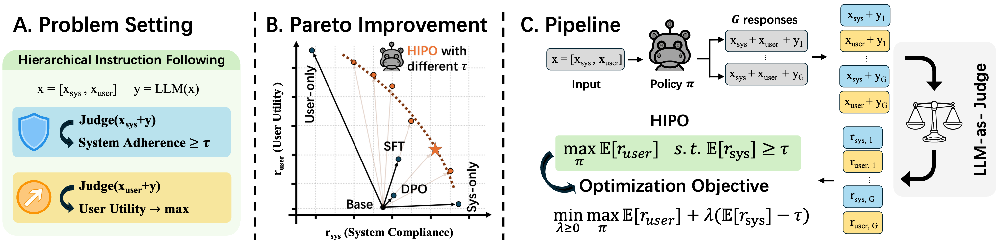
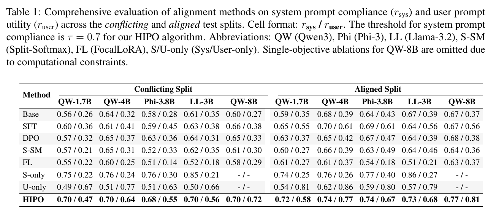
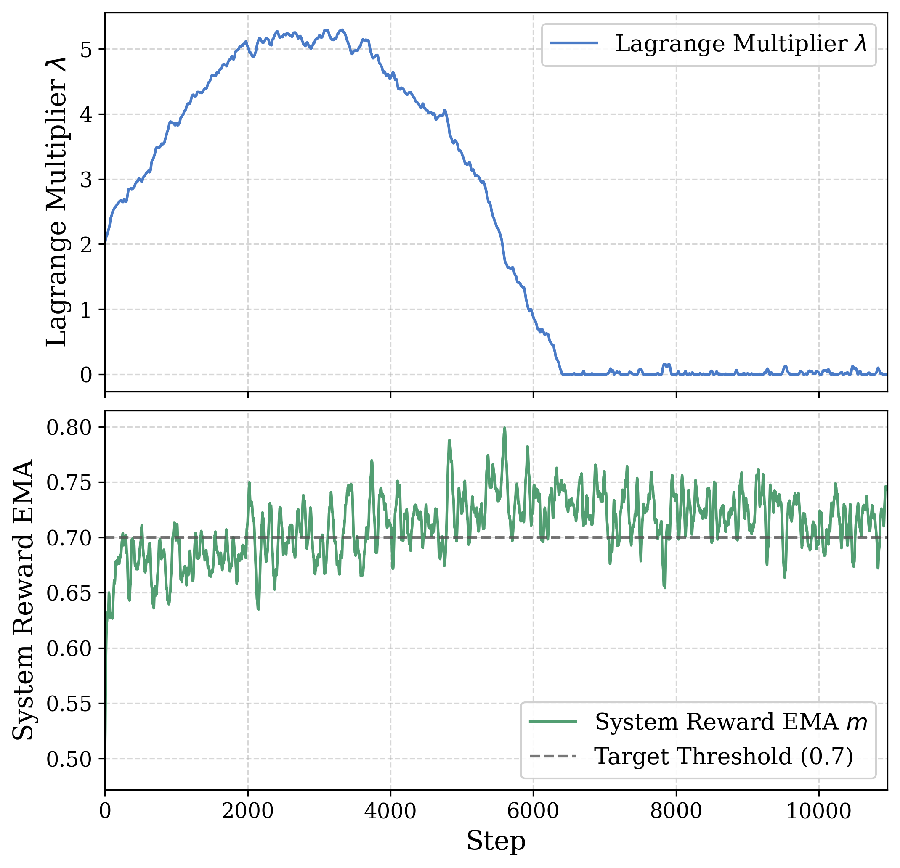

arXiv:2603.16152
HIPO: Instruction Hierarchy via Constrained Reinforcement Learning
arXiv preprint, submitted March 17, 2026
HIPO models hierarchical instruction following as constrained optimization: system prompt compliance is the constraint, and user utility is optimized within the feasible region.
Framework Overview

Abstract
Hierarchical Instruction Following (HIF) refers to prompting large language models with a priority-ordered stack of instructions. Standard RLHF and DPO mainly optimize a single objective, so they do not explicitly enforce system prompt compliance. Supervised fine-tuning imitates filtered compliant data, but does not establish priority asymmetry at the algorithmic level.
HIPO formulates HIF as a Constrained Markov Decision Process. System prompts become strict algorithmic boundaries rather than ordinary input context. A primal-dual safe reinforcement learning procedure dynamically enforces system compliance while maximizing user utility inside the feasible region. Experiments across Qwen, Phi, and Llama show improvements in both system compliance and user utility, and attention analysis shows a shift toward long-range system tokens.
Method
A hierarchical prompt is written as x = [x_sys, x_user]. The system prompt specifies global constraints, formatting rules, safety policies, or personas. The user prompt specifies the immediate task. HIPO treats these two prompt segments asymmetrically: the system prompt is not another preference to trade off against the user prompt, but a boundary that the policy must satisfy.
The optimization target is max E[r_user] subject to E[r_sys] >= tau. The two rewards are measured with separate LLM-as-judge calls: one judge evaluates whether the response follows the system prompt while ignoring the user task, and another evaluates whether the response satisfies the user prompt while isolating it from system constraints. This avoids mixing two different evaluation criteria in a single judgment.
Training uses a primal-dual update. If the batch-level system reward falls below the threshold tau, the Lagrange multiplier increases and penalizes policy updates that violate the system boundary. Once the constraint is satisfied, the multiplier decays and optimization focuses again on user utility. To reduce variance and avoid a separate value network, HIPO samples a group of responses for each prompt and applies GRPO-style in-group advantage normalization.
Main Results
Table 1 reports r_sys / r_user on conflicting and aligned splits. HIPO consistently approaches or exceeds the target system compliance threshold tau = 0.7 while preserving user utility.

Optimization Dynamics
The Lagrange multiplier rises when system compliance is below the threshold and decays after the constraint is satisfied. This is the practical mechanism that keeps the policy inside the system-compliant region while still allowing improvement on user utility.
In safety evaluations, HIPO also reduces attack success rates when safety-oriented system prompts are present, without collapsing into the over-refusal behavior observed in some supervised baselines.

Mechanistic Signal
On 200 SystemCheck samples at response onset, HIPO shifts attention toward the system segment and farther prompt positions compared with the base Qwen3-1.7B model.
| Metric | Base | HIPO | Delta |
|---|---|---|---|
| System attention mass | 0.8222 | 0.8272 | +0.0050 |
| System/user attention ratio | 9.218 | 9.719 | +0.501 |
| Far/near attention ratio | 3.1703 | 3.2746 | +0.1043 |
BibTeX
@misc{chen2026hipoinstructionhierarchyconstrained,
title = {HIPO: Instruction Hierarchy via Constrained Reinforcement Learning},
author = {Chen, Keru and Luo, Jun and Lin, Sen and Liang, Yingbin and Velasquez, Alvaro and Bastian, Nathaniel and Zou, Shaofeng},
year = {2026},
eprint = {2603.16152},
archivePrefix = {arXiv},
primaryClass = {cs.LG},
doi = {10.48550/arXiv.2603.16152},
url = {https://arxiv.org/abs/2603.16152}
}